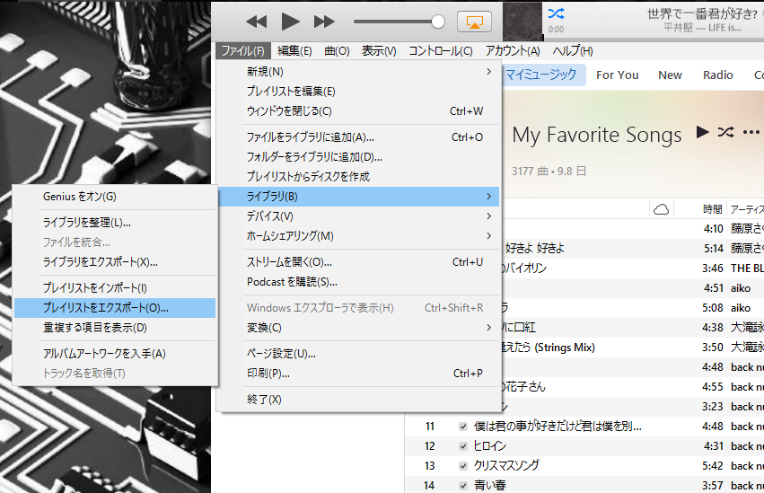

VolumioでiTunesのプレイリストを使う
概要
Volumio
Volumioというミュージックサーバーソフトウェアがある．
ラズベリーパイにVolumioのOSを書き込むだけで，ミュージックサーバーが出来上がるし，Air Playや，SMBにも対応していて，素晴らしいものだ．
プレイリスト問題
しかし，そのプレイリストは独自の形式で，iTunesなどのプレイリストを読み込むことができず，新たに作らなくてはならない．
めんどくさい！
ということで，今回は，iTunesのプレイリストをvolumioのプレイリストに変換するスクリプトを紹介する．
iTunesでのプレイリスト出力方法
- iTunes上のプレイリストを表示した状態にする
メニュー→ファイル→ライブラリ→プレイリストのエクスポートを選ぶ- 出力ファイル形式を
.m3uにして保存する

プレイリストのフォーマット
一般的なM3U形式
例えば
- 花束/back number
- 高嶺の花子さん/back number
- サイレン/back number
のプレイリストならば，以下のように1行目にファイル形式，2行目以降は2行ずつ曲の詳細が書かれており，1行目はアーティストと曲名で，2行目はパスになっている．
Playlist.m3u
#EXTM3U
#EXTINF:287,花束 - back number
C:\Users\hoge\Music\iTunes\iTunes Media\Music\back number\スーパースター\03 花束.m4a
#EXTINF:294,高嶺の花子さん - back number
C:\Users\hoge\Music\iTunes\iTunes Media\Music\back number\ラブストーリー\06 高嶺の花子さん.m4a
#EXTINF:203,サイレン - back number
C:\Users\hoge\Music\iTunes\iTunes Media\Music\back number\シャンデリア\02 サイレン.m4a
Volumioの独自JSON形式
JSONであることは確かであるが，内容は独自であると思われる．
基本的には見たままだが，albumartだけはちょっとわかりにくい．細かいことはrubyコードを見てほしいが，URLエンコードが施されている．
Playlist.json
[
{
"service": "mpd",
"uri": "mnt/INTERNAL/back number/スーパースター/03 花束.m4a",
"title": "花束 ",
"artist": "back number",
"album": "スーパースター",
"albumart": "/albumart?web=back%20number/%E3%82%B9%E3%83%BC%E3%83%91%E3%83%BC%E3%82%B9%E3%82%BF%E3%83%BC/large&path=%2Fmnt%2FINTERNAL%2Fback%20number%2F%E3%82%B9%E3%83%BC%E3%83%91%E3%83%BC%E3%82%B9%E3%82%BF%E3%83%BC%2F03%20%E8%8A%B1%E6%9D%9F.m4a"
},
{
"service": "mpd",
"uri": "mnt/INTERNAL/back number/ラブストーリー/06 高嶺の花子さん.m4a",
"title": "高嶺の花子さん",
"artist": "back number",
"album": "ラブストーリー",
"albumart": "/albumart?web=back%20number/%E3%83%A9%E3%83%96%E3%82%B9%E3%83%88%E3%83%BC%E3%83%AA%E3%83%BC/large&path=%2Fmnt%2FINTERNAL%2Fback%20number%2F%E3%83%A9%E3%83%96%E3%82%B9%E3%83%88%E3%83%BC%E3%83%AA%E3%83%BC%2F06%20%E9%AB%98%E5%B6%BA%E3%81%AE%E8%8A%B1%E5%AD%90%E3%81%95%E3%82%93.m4a"
},
{
"service": "mpd",
"uri": "mnt/INTERNAL/back number/シャンデリア/02 サイレン.m4a",
"title": "サイレン",
"artist": "back number",
"album": "シャンデリア",
"albumart": "/albumart?web=back%20number/%E3%82%B7%E3%83%A3%E3%83%B3%E3%83%87%E3%83%AA%E3%82%A2/large&path=%2Fmnt%2FINTERNAL%2Fback%20number%2F%E3%82%B7%E3%83%A3%E3%83%B3%E3%83%87%E3%83%AA%E3%82%A2%2F02%20%E3%82%B5%E3%82%A4%E3%83%AC%E3%83%B3.m4a"
}
]
変換スクリプト
rubyで書いてみた
rubyの練習のためにrubyで書いてみた．
m3u2volumio.rb
#!/bin/ruby
require 'json'
require 'erb'
include ERB::Util
MOUNT_PATH = 'INTERNAL' # 曲が保存してあるパス
#MOUNT_PATH = 'NAS/Music' # 曲が保存してあるパス
ARGV.each do |file_name| # コマンドライン引数を受け取る
json_name = "#{file_name.match(/^(.+)\..{1,4}$/)[1]}.json" # 拡張子をjsonに変更した文字列
puts "Creating #{json_name}"
output = [] # 曲目が入る空の配列
File.open(file_name) do |file|
file.gets # 1行目は無視
while line1 = file.gets do # 1行目
line2 = file.gets # 2行目
line1.chomp! # 改行を除去
line2.chomp! # 改行を除去
title = line1.match(/^[^,]+,(.+) - (.+)/)[1] # 曲名を抽出
artist = line1.match(/^[^,]+,(.+) - (.+)/)[2] # アーティスト名を抽出
parts = line2.split("\\") # パスは'\'で区切られているので，'\'で分割
album = parts[-2] # アーティスト名を抽出
path = "mnt/#{MOUNT_PATH}/#{parts[-3]}/#{parts[-2]}/#{parts[-1]}" # 曲が保存してあるパス
song = {} # 曲の詳細が入る空のオブジェクト（ハッシュ）
song["service"]="mpd"
song["uri"]=path
song["title"]=title
song["artist"]=artist
song["album"]=album
song["albumart"]="/albumart?web=#{url_encode(artist)}/#{url_encode(album)}/large&path=%2F#{url_encode(path)}"
output.push song
end
end
File.open(json_name,"w") do |json|
json.puts JSON.pretty_generate output
end
end
使い方
前提条件
- WindowsのiTunesで作成されたプレイリストファイルである
- 曲の保存場所は，
INTERNALストレージ - 曲のディレクトリ構成は，iTunesそのままで，
INTERNAL/アーティスト名/アルバム名/曲名
プレイリストの作成
$ ls
m3u2volumio.rb playlist.m3u
$ ./m3u2volumio.rb playlist.m3u
Creating playlist.json
$ ls
m3u2volumio.rb playlist.m3u playlist.json
プレイリストの送信
$ scp playlist.json volumio@volumio.local:/data/playlist/playlist.json
外付けストレージやNASを使う場合
rubyコード中のMOUNT_PATHに適当なパスを設定すればよい．
注意
上手くやれば上手くいくが，操作にミスがあるとVolumioが落ちるので注意が必要である．ただ，すぐに再起動するし，落ちるのはVolumioのアプリケーションだけで，ラズパイ自体は落ちない．
まとめ
今後のアップデートで使えなくなるかもしれないけど，なんとか使えた．volumioは便利だから，もっと便利に使おう！
次の記事
ラズパイでミュージックサーバー
前の記事